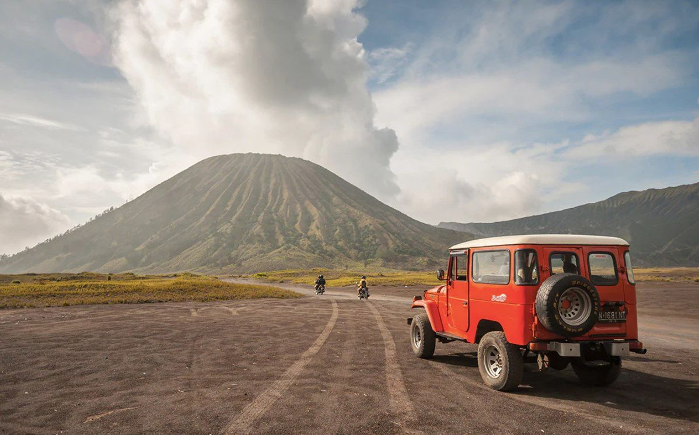
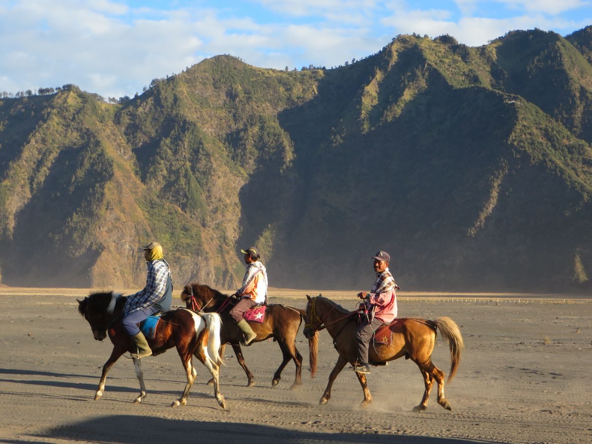
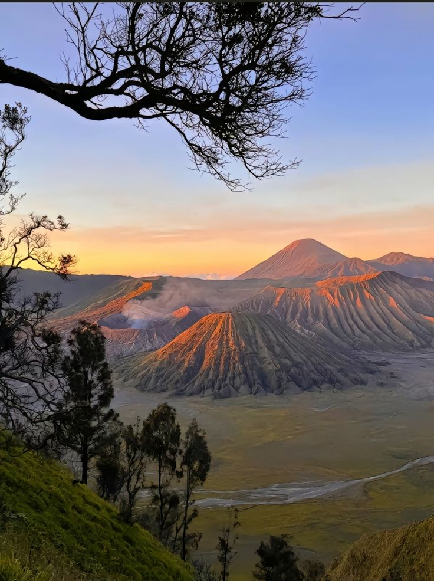
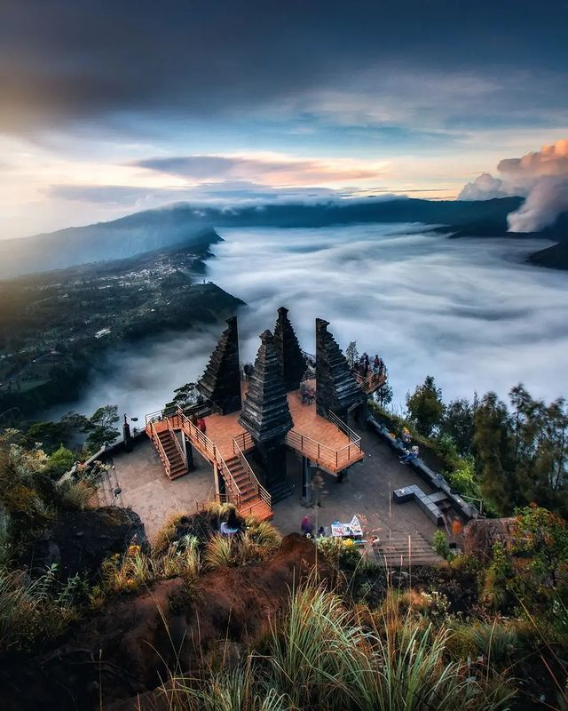
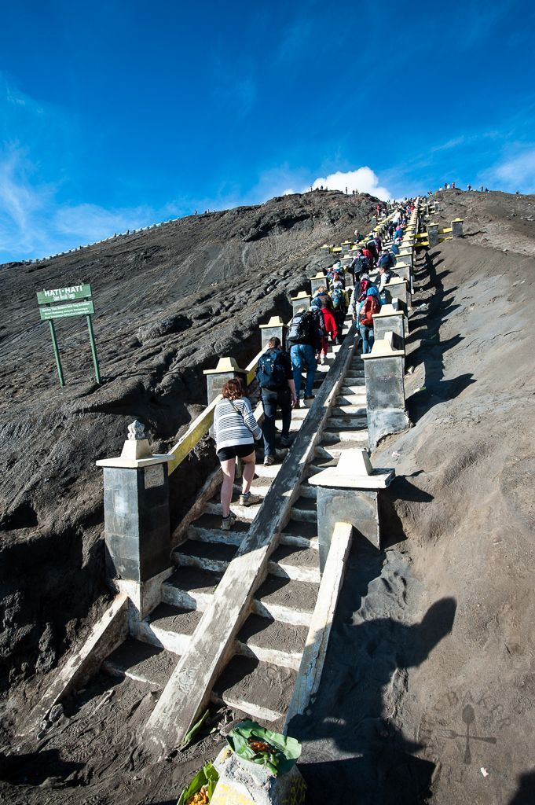
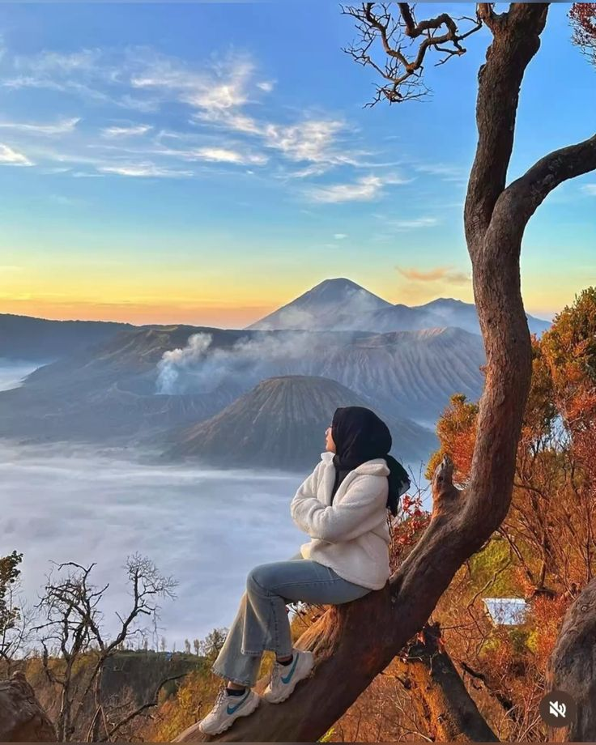
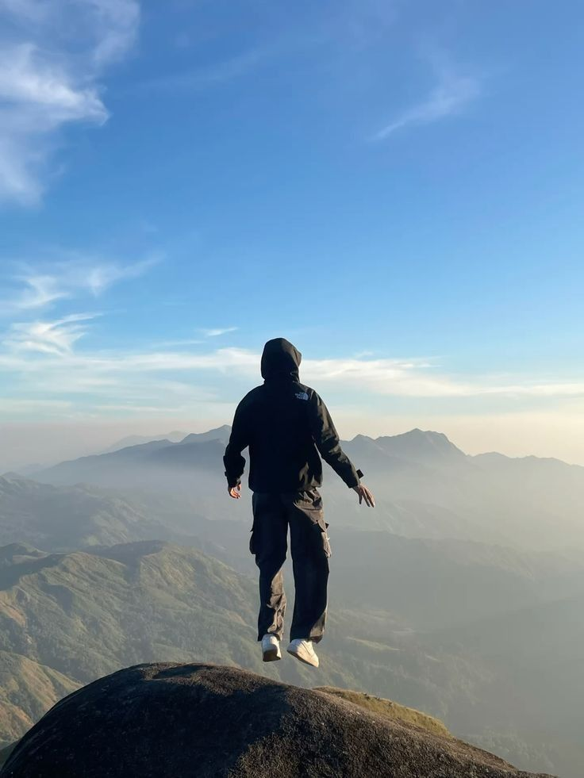

01
Pickup point jelas dan rundown dikirim sebelum keberangkatan.
Buat traveler yang ingin lihat Bromo tanpa repot mikirin jeep, rute, jam berangkat, dan spot foto. OpenTripBromo merapikan semuanya jadi satu perjalanan yang hangat, cepat, dan tetap nyaman di segala device maupun di lapangan.
01
Pickup point jelas dan rundown dikirim sebelum keberangkatan.
4.9/5
Format trip dibuat ringkas supaya sunrise, pasir berbisik, dan savana tetap terkejar.
24/7
Admin standby untuk konfirmasi seat, cuaca, dan perlengkapan yang perlu dibawa.



Yang didapat
Jeep sunrise & driver lokal
Rundown yang jelas sebelum hari H
Spot utama tanpa itinerary bertele-tele
Cocok untuk
Solo traveler, pasangan, dan rombongan kecil
Waktu trip
Midnight trip atau 2D1N dengan city stay
Fokus utama
Sunrise rapi, foto bagus, dan koordinasi gampang
Kenapa OpenTripBromo
Banyak open trip terasa tergesa-gesa karena informasi datang mendadak, titik kumpul membingungkan, atau rundown tidak realistis. Di sini, kami rapikan ekspektasi dari awal, pilih spot yang memang worth it, dan menjaga ritme supaya Anda masih sempat menikmati suasana, bukan cuma pindah titik foto.
Rundown jelas
Detail jam kumpul, estimasi sunrise, dan perlengkapan dikirim sebelum trip dimulai.
Spot tetap prioritas
Penanjakan, lautan pasir, savana, dan bukit teletubbies tetap jadi fokus utama.
Admin responsif
Cocok untuk first-timer yang butuh jawaban cepat soal cuaca, outfit, dan transport tambahan.
Visual tetap dapat
Komposisi perjalanan dibuat supaya momen sunrise dan area jeep tetap punya waktu untuk diabadikan.

Highlight 01
Datang untuk cahaya pertama yang jadi alasan banyak orang kembali ke Bromo.

Highlight 02
Sensasi perjalanan off-road yang jadi bagian paling ikonik dari trip Bromo.

Highlight 03
Perubahan mood visual dari abu vulkanik ke hamparan hijau yang lebih lega.

Highlight 04
Komposisi spot dan waktu berhenti dibuat pas agar hasil foto tidak terasa buru-buru.
Flow Perjalanan
01
Meeting point
Briefing singkat, cek seat, lalu berangkat menuju jeep basecamp.
02
Sunrise dan spot inti
Penanjakan, lautan pasir, kawah, dan savana dikejar dalam urutan yang efisien.
03
Drop off aman
Kembali ke meeting point dengan estimasi waktu yang sudah dijelaskan sejak awal.
Pricing Open Trip
Harga dibuat transparan dan mudah dibaca. Jika Anda ingin rombongan privat, tinggal gunakan paket paling fleksibel atau minta penyesuaian saat booking.
Paket Hemat
Berangkat malam, fokus sunrise dan spot inti. Cocok untuk first timer yang ingin perjalanan singkat.
Rp275.000
per orang
Transport lokal area trip
Jeep Bromo sharing
Tiket spot utama
Koordinator trip
Paling Dicari
Format paling seimbang untuk sunrise, kawah, savana, dan dokumentasi yang lebih leluasa.
Rp425.000
per orang
Semua benefit paket Midnight
Snack hangat & air mineral
Tambahan waktu di savana
Prioritas update info cuaca
Paket Fleksibel
Untuk pasangan atau rombongan kecil yang ingin jam, pace, dan pickup lebih fleksibel.
Rp1.850.000
mulai dari 1 jeep
Jeep privat
Bisa request pickup
Lebih leluasa untuk foto
Cocok untuk couple atau family trip
Visual Trip
Semua aset foto pada halaman ini diambil dari folder sumber open-trip, lalu ditata ulang menjadi visual yang lebih modern. Hasilnya bukan sekadar galeri, tapi presentasi perjalanan yang lebih siap jual dan lebih mudah dipahami calon peserta.
Amankan kursi sekarangKata Mereka
"Saya ikut yang Sunrise Plus. Briefing jelas, admin cepat jawab, dan itinerary-nya tidak bikin ngos-ngosan. Sunrise dapat, foto juga dapat."
Nadia, Surabaya
Solo traveler
"Yang saya suka justru koordinasinya. Dari sebelum berangkat sudah dikasih list barang dan jam kumpul yang detail, jadi minim drama saat hari H."
Rizky & Aulia, Malang
Couple trip
"Kami ambil private small group buat family. Pace-nya enak, tidak diburu-buru, dan anak-anak masih sempat menikmati savana. Worth it."
Dian, Sidoarjo
Family trip
FAQ
Kalau masih ada detail yang belum terjawab, Anda bisa lanjut ke tombol booking dan minta rundown lengkap ke admin.
Booking CTA
Kirim tanggal yang Anda incar, jumlah peserta, dan titik keberangkatan. Tim OpenTripBromo akan bantu cek seat, sarankan paket, lalu kirim rundown supaya Anda bisa berangkat dengan lebih tenang.